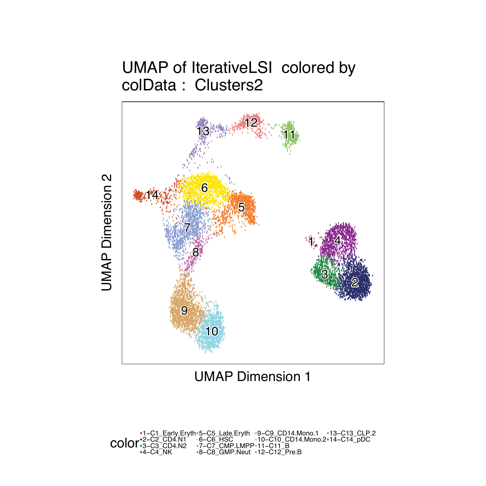

8.3 Labeling scATAC clusters with scRNA
Now that we have pretty good scRNA and scATAC correspondence we can label our clusters with scRNA
## [1] “plotting ggplot!”
## [1] 0

To save a nice looking pdf we use plotPDF which removes white pages and tries to make the plots nice looking.